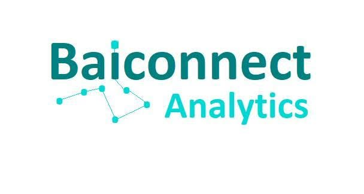

Data Analytics
Designing research-backed analytical systems that transform complex data into clear, actionable intelligence for organizations and leadership teams.
Software Engineer • Data Analyst • Entrepreneur • Academician • Researcher
As a Software Engineer and a Data Analyst, I am building an AI-driven research and analytics firm that helps organizations make evidence-based strategic decisions.
Skills & Competencies
Editorial note
Creating digital systems and delivering data-driven insights through software engineering, data analysis, research, and technology to generate practical, real-world impact.
About
I combine software engineering, data analysis, research, and entrepreneurship to create digital solutions that generate measurable impact. My work spans web application development, [...]
As the founder of Baiconnect Data & Analytics, I am building a research and analytics firm that leverages Artificial Intelligence, advanced analytics, and evidence-based research to h[...]
Experience
Designing research-backed analytical systems that transform complex data into clear, actionable intelligence for organizations and leadership teams.
Developing practical AI and digital solutions that support automation, forecasting, optimization, and smarter operational delivery.
Leading teams and initiatives at the intersection of technology, research, and executive decision-making to drive sustainable impact.

Building a research and analytics firm that applies AI, advanced analytics, and evidence-based insights to help organizations make smarter strategic decisions.
Institutions
Lecturer in Advanced Web Technologies and Mobile & Wireless Networks.
Assistant Director of ICT Services, overseeing databases, support, websites, and software delivery.
Operation Manager supporting strategic operations and delivery across business functions.
Projects
Featured work
Engineering practical digital solutions and transformative learning experiences by combining software engineering, data analytics, research, and technology to solve real-worl[...]
"Insight-driven • Innovation-focused • Impact-oriented."
University of Juba research platform supporting institutional visibility, academic information, and digital access.
Hotel management and booking experience designed for a modern hospitality workflow.
Organization web platform focused on structured digital presence and stakeholder engagement.
Contact
Let's collaborate on innovative projects, research, AI-driven solutions, speaking engagements, or technology initiatives that create meaningful impact.
Email Me